God of War 1

La historia del primer "God of War" (GoW), lanzado en 2005 para la consola PlayStation 2, sigue la travesía del protagonista Kratos, un guerrero espartano lleno de ira y sed de venganza contra los dioses del Olimpo. La narrativa comienza con Kratos, un general espartano, liderando a sus tropas en una batalla desesperada contra un ejército invasor liderado por un bárbaro. En medio de la batalla, cuando Kratos se encuentra al borde de la derrota, hace un pacto con Ares, el dios griego de la guerra, ofreciendo su lealtad a cambio de la victoria. Ares acepta, pero a cambio, exige que Kratos mate a su propia familia, sumiéndolo así en un profundo tormento emocional. Atormentado por la culpa y la angustia, Kratos se convierte en el "Fantasma de Esparta", un guerrero despiadado que sirve a Ares y ejecuta sus órdenes sin cuestionarlas. Sin embargo, la crueldad de Ares alcanza un punto crítico cuando ordena a Kratos asesinar a un pueblo entero, incluidos mujeres y niños. En ese momento, Kratos se rebela contra Ares y busca redención al destruir al dios que lo manipuló y destruyó su vida. La aventura de Kratos lo lleva a través de diversas ubicaciones de la mitología griega, donde enfrenta monstruos, resuelve acertijos y lucha contra los sirvientes de los dioses. A lo largo del juego, Kratos obtiene poderes divinos, como la espada de caos, y forja alianzas con personajes como la diosa Atenea. El clímax del juego tiene lugar cuando Kratos finalmente enfrenta a Ares en una batalla épica. Utilizando sus habilidades y la ayuda de los dioses, Kratos triunfa sobre Ares, pero no sin un gran costo personal. Al final, Kratos asciende al Olimpo como el nuevo dios de la guerra, pero su sed de venganza y su tormento interno no han desaparecido. La historia de "God of War" no solo es una epopeya de acción y violencia, sino también una exploración de temas más profundos como la redención, la venganza y las consecuencias de las acciones impulsivas. Este primer juego estableció las bases para una de las franquicias más icónicas y aclamadas en la historia de los videojuegos.
God of War 2

La secuela de "God of War", titulada "God of War II", fue lanzada en 2007 para la consola PlayStation 2, continuando la épica historia de venganza y conflicto de Kratos. La historia de "God of War II" comienza poco después de los eventos del primer juego. Kratos, ahora el dios de la guerra, está plagado por pesadillas y visiones del pasado, atormentado por el recuerdo de sus acciones y la traición de los dioses del Olimpo. A pesar de su posición divina, Kratos aún busca la absolución y la redención por sus pecados pasados. La trama principal se desarrolla cuando Kratos, desafiante y despreciativo de los dioses, intenta tomar asiento en el trono del Olimpo, en un intento por superar su propio destino y liberarse de las manipulaciones divinas. Sin embargo, su arrogancia atrae la ira de Zeus, el rey de los dioses, quien ve en Kratos una amenaza para el orden divino. Zeus, temeroso de perder su posición, conspira para destruir a Kratos y lo engaña, quitándole sus poderes divinos y traicionándolo. Kratos es arrojado desde lo alto del Olimpo y enviado al inframundo, donde se encuentra con el titán Gaia, quien le ofrece su ayuda para vengarse de los dioses y recuperar su lugar en el Olimpo. A lo largo del juego, Kratos recorre diferentes ubicaciones de la mitología griega, luchando contra criaturas colosales, resolviendo acertijos y enfrentándose a los sirvientes de los dioses. Utiliza nuevas armas y poderes, incluida la Espada de los Dioses, para abrirse camino hacia la cima del Monte Olimpo y enfrentarse a Zeus. La historia de "God of War II" culmina en una batalla épica entre Kratos y Zeus, donde el destino de ambos está en juego. Kratos, decidido a vengarse y liberarse de las cadenas de su pasado, enfrenta a Zeus en un enfrentamiento final lleno de tragedia y violencia. La trama de "God of War II" explora temas de poder, traición, redención y la búsqueda de la libertad personal en un mundo dominado por los dioses. La secuela amplía y enriquece el universo de la franquicia, estableciendo las bases para futuras entregas y consolidando a Kratos como uno de los personajes más icónicos en la historia de los videojuegos.
God of War 3
La historia de "God of War III" continúa la saga de Kratos, el guerrero espartano lleno de ira y sed de venganza contra los dioses del Olimpo. Lanzado en 2010 para la consola PlayStation 3, este juego concluye la trilogía original de "God of War" con una épica y devastadora confrontación contra los dioses griegos. La trama de "God of War III" comienza inmediatamente después de los eventos de "God of War II", donde Kratos, traicionado por Zeus y abandonado en el abismo, inicia su búsqueda de venganza contra el rey de los dioses y todos los que se interpongan en su camino. El juego comienza con Kratos liderando un asalto al Monte Olimpo con la ayuda de los titanes, seres ancestrales que buscan venganza contra los dioses olímpicos. A medida que avanza, Kratos se enfrenta a criaturas colosales y desafíos mortales, mientras lucha por abrirse camino a través de las defensas divinas. En su búsqueda de venganza, Kratos encuentra aliados improbables y enemigos formidables. Se reencuentra con personajes de su pasado, como Gaia y Pandora, y enfrenta a los dioses del Olimpo uno por uno, utilizando su ingenio, su fuerza descomunal y las armas divinas que encuentra en su camino. La narrativa de "God of War III" es una espiral descendente de destrucción y tragedia, donde Kratos, consumido por su sed de venganza, se enfrenta a las consecuencias de sus acciones pasadas y las atrocidades que ha cometido en su camino hacia el poder. La línea entre héroe y villano se desdibuja a medida que Kratos se enfrenta a la realidad de su propia naturaleza y el precio de su sed de poder. El clímax del juego culmina en una batalla épica contra Zeus, donde Kratos, despojado de todo, incluida su humanidad, se enfrenta al rey de los dioses en una confrontación final llena de tragedia y violencia. La resolución de esta batalla no solo determina el destino de Kratos, sino también el destino del mundo griego y el equilibrio de poder en el Olimpo. La historia de "God of War III" es una conclusión épica y emocionante para la trilogía original, llena de giros inesperados, momentos emotivos y confrontaciones memorables. Es una narrativa que explora temas profundos como la redención, la traición y las consecuencias de la ambición desenfrenada, dejando una marca indeleble en el legado de Kratos como uno de los personajes más icónicos en la historia de los videojuegos.
God of War 4
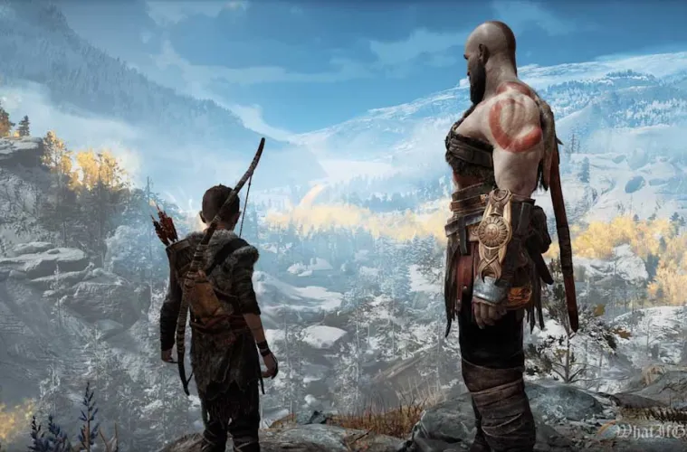En "God of War" (2018), también conocido como "God of War 4", la franquicia da un giro radical tanto en términos de jugabilidad como de narrativa. Esta entrega, lanzada para la consola PlayStation 4, se distancia de la mitología griega que había sido el pilar de los juegos anteriores y se sumerge en la mitología nórdica. La historia sigue a Kratos, quien ahora vive en Midgard (la Tierra de los Hombres) en un mundo dominado por deidades y criaturas nórdicas. Ha dejado atrás su pasado como el dios de la guerra griego y busca una vida tranquila y una nueva identidad como padre. Está acompañado por su hijo Atreus, cuya madre, Faye, ha fallecido recientemente. El juego comienza con la muerte de Faye y su deseo de que sus cenizas sean esparcidas desde la cima de la montaña más alta de los Nueve Reinos. Kratos y Atreus emprenden un viaje para cumplir este último deseo, llevando consigo un hacha mágica y enfrentándose a peligros y desafíos en su camino. A lo largo de su viaje, Kratos y Atreus se encuentran con dioses nórdicos, criaturas mitológicas y entidades misteriosas que los ponen a prueba física y emocionalmente. Kratos intenta enseñarle a su hijo las lecciones de la vida y la importancia de controlar su ira y su poder, mientras que Atreus busca comprender su propio legado y su conexión con las divinidades nórdicas. La narrativa de "God of War" (2018) se centra en la relación entre Kratos y Atreus, explorando temas como el legado, el perdón, la redención y la paternidad. A medida que avanza la historia, se revelan secretos sobre el pasado de Kratos y la verdadera identidad de Atreus, así como el papel que desempeñan en el destino del mundo nórdico. El juego presenta una jugabilidad renovada, con una cámara más cercana al personaje, un sistema de combate más táctico y una exploración más abierta del mundo. Además, cuenta con impresionantes gráficos y una banda sonora épica que complementa la atmósfera del juego. En resumen, "God of War" (2018) es una reinvención magistral de la franquicia, ofreciendo una historia emocionante, personajes complejos y una experiencia de juego memorable que ha sido aclamada tanto por los críticos como por los jugadores.
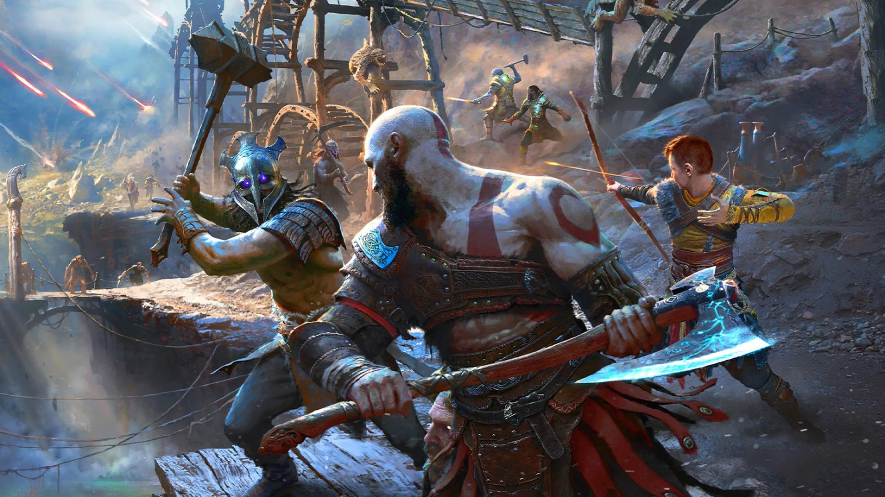 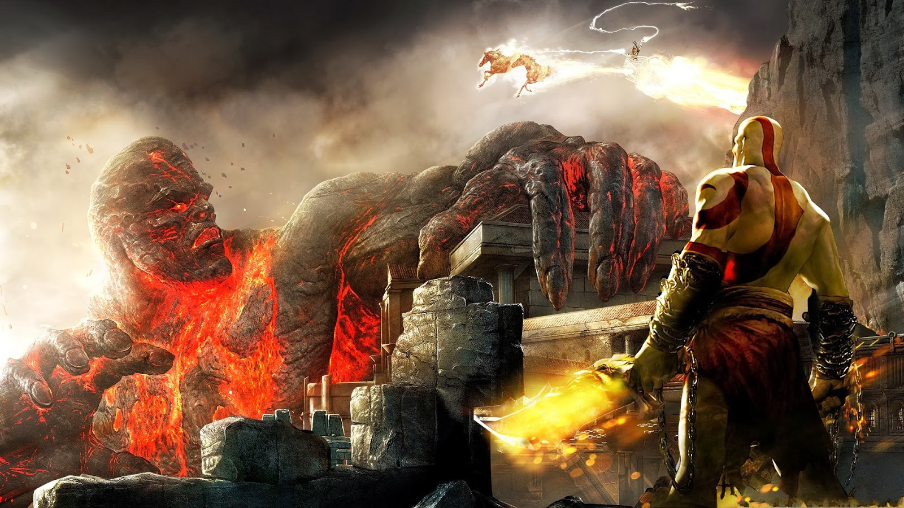
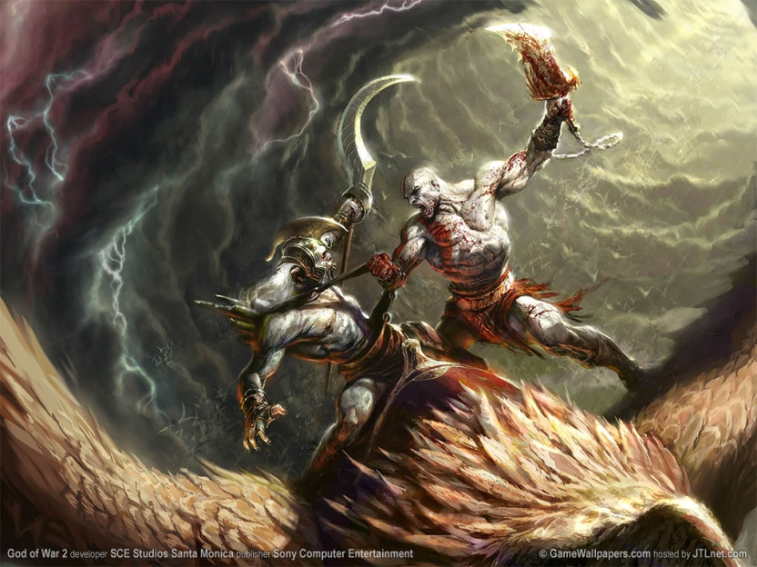
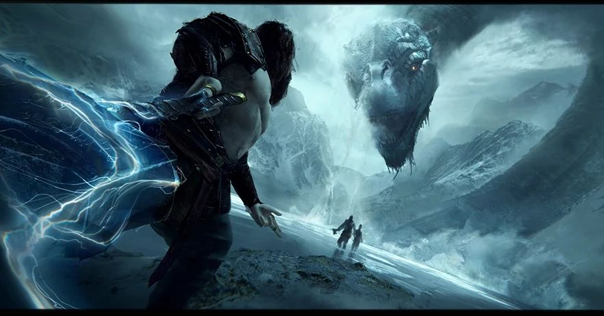
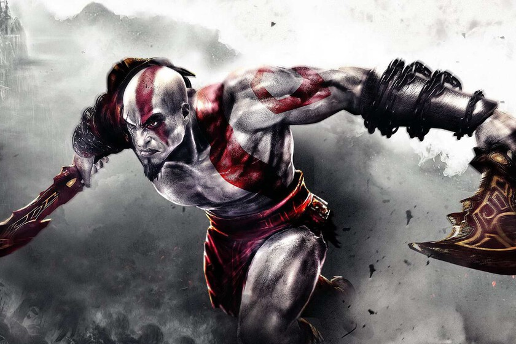
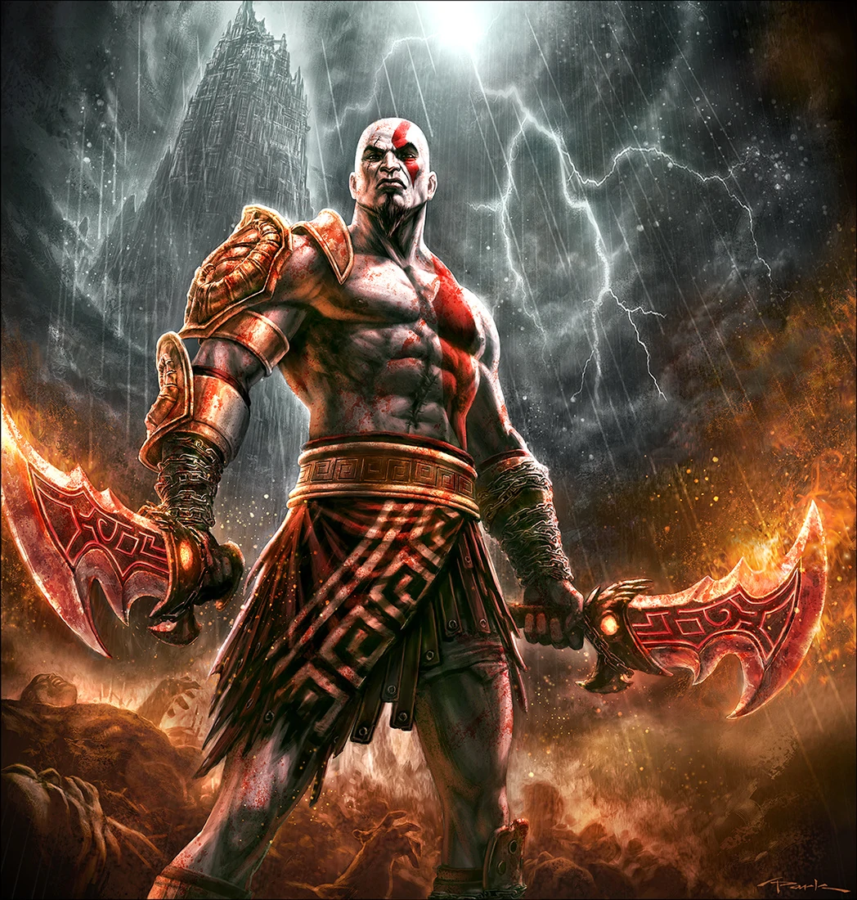
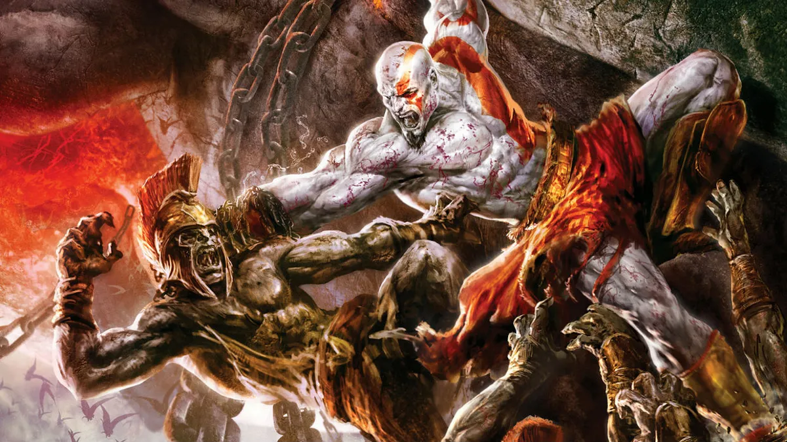
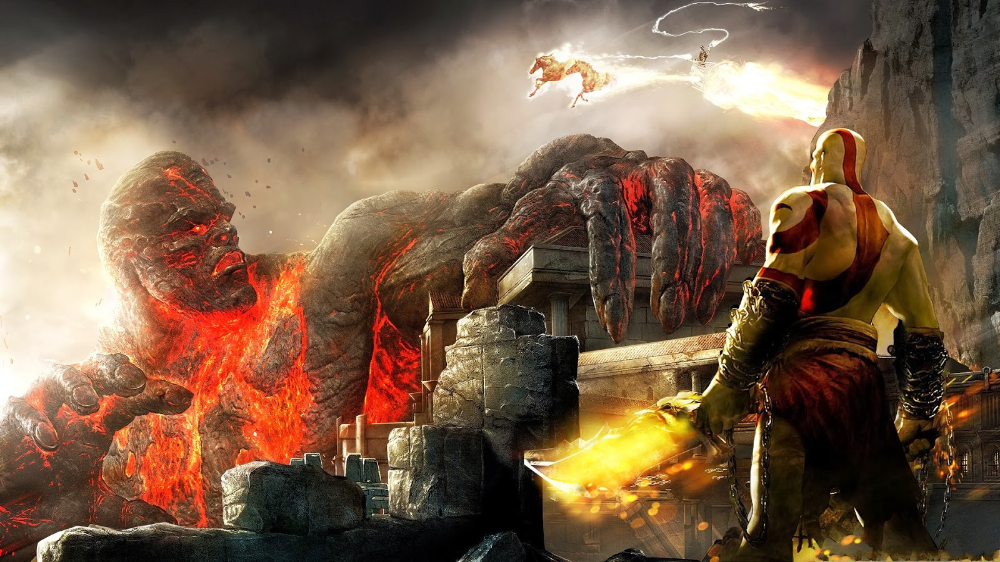
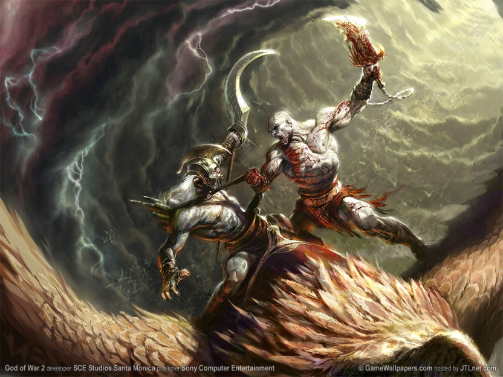
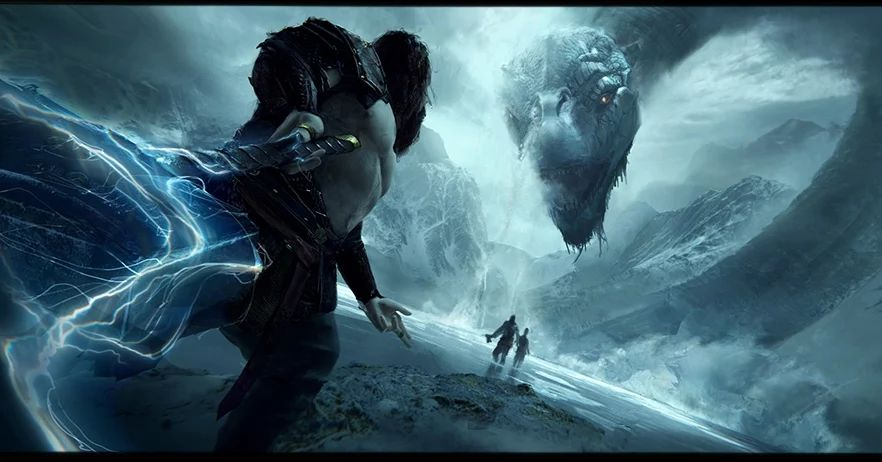
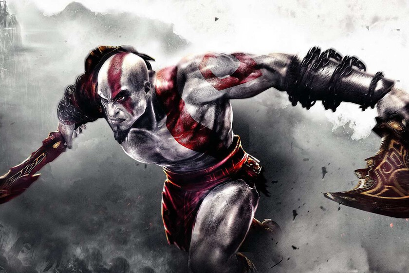
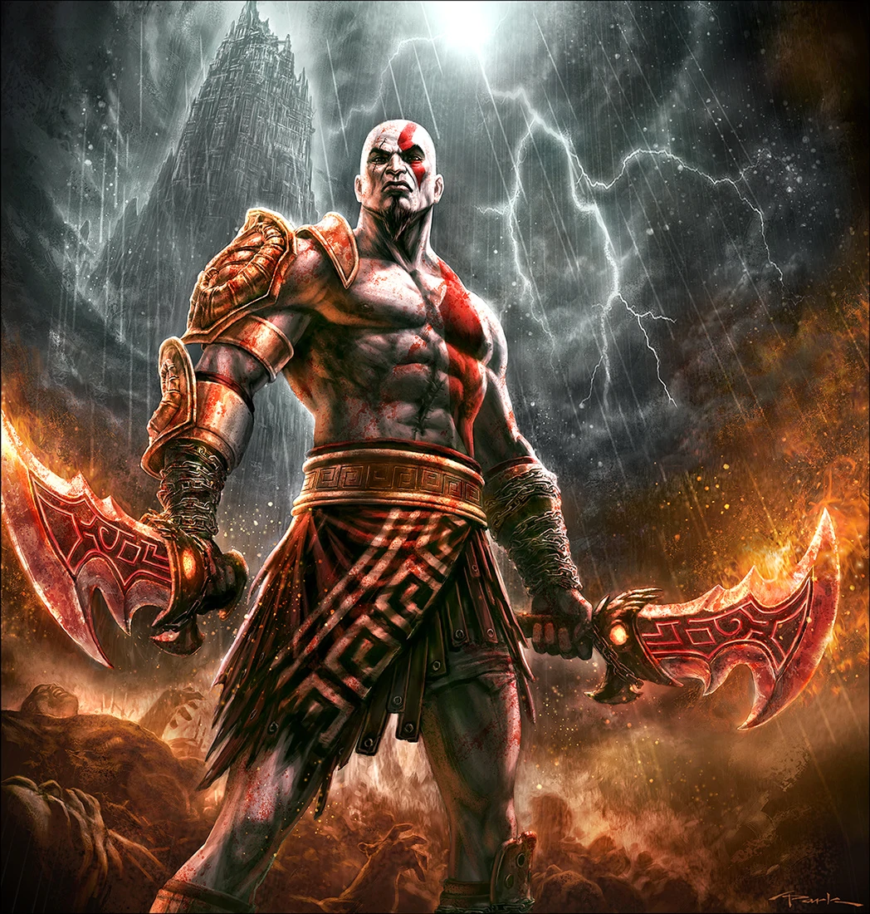
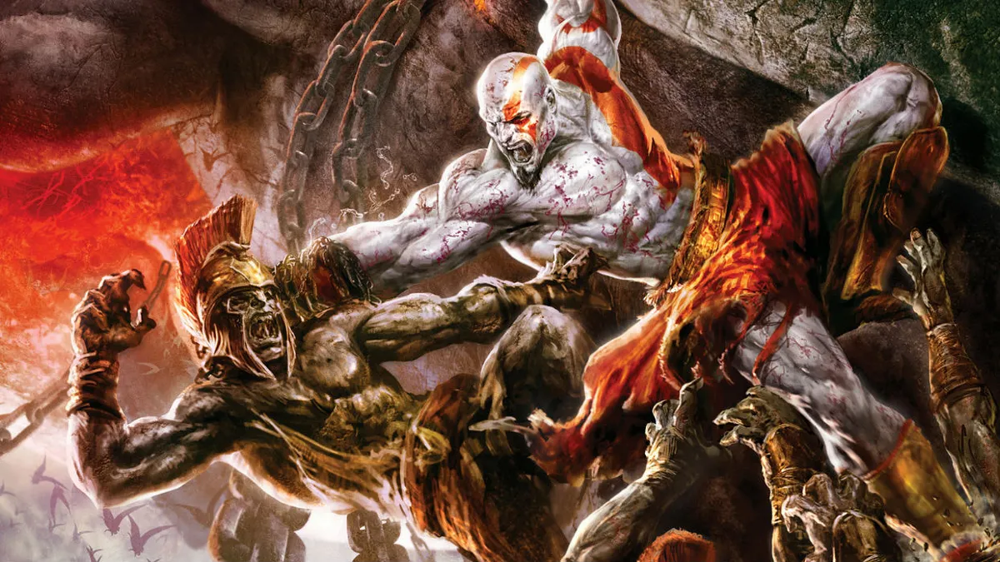
 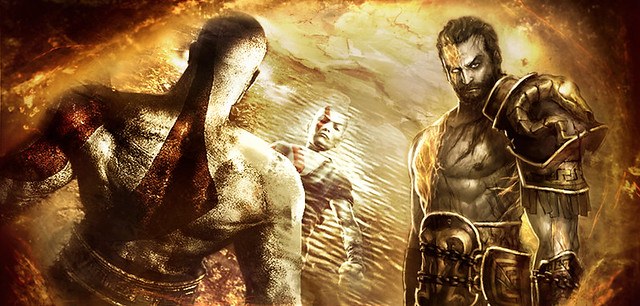
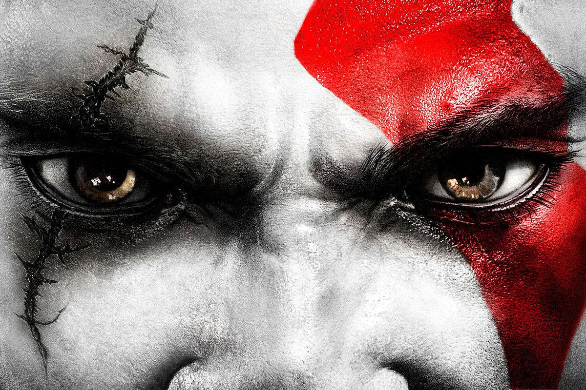
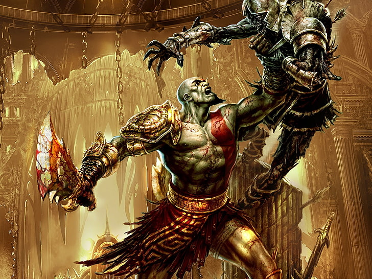
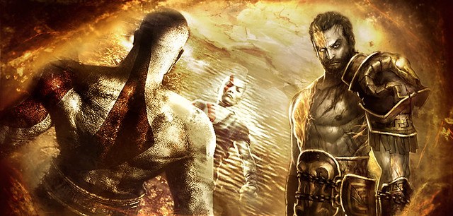
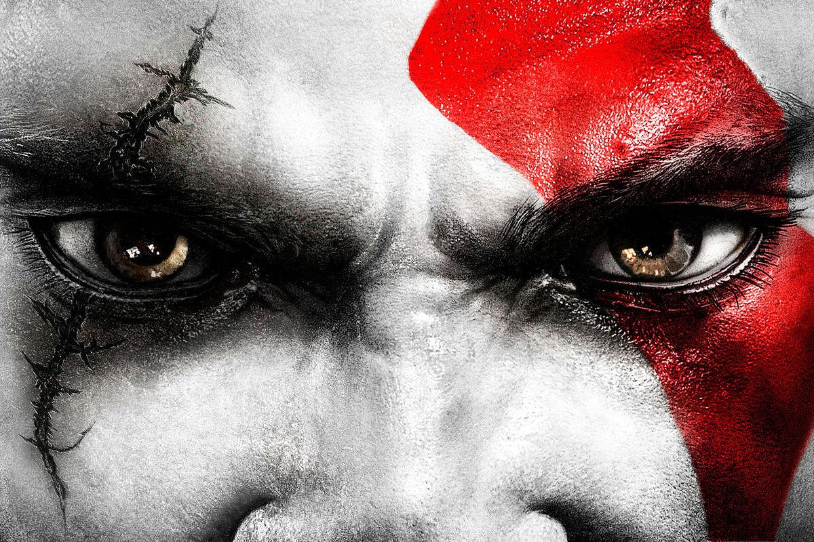
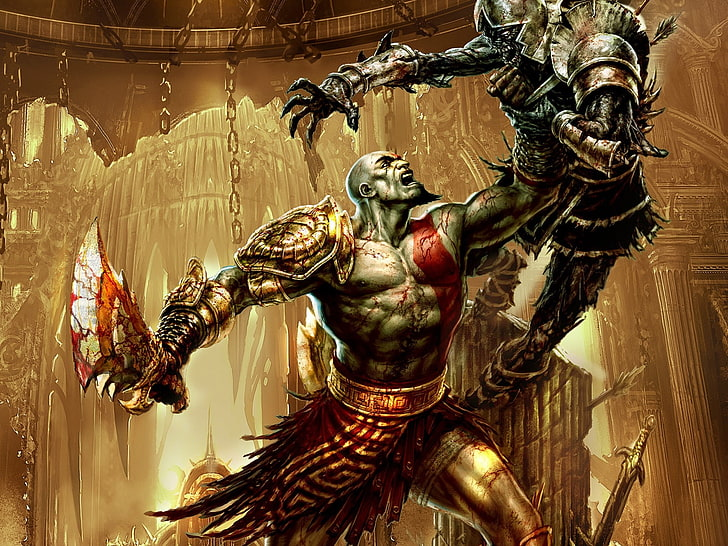